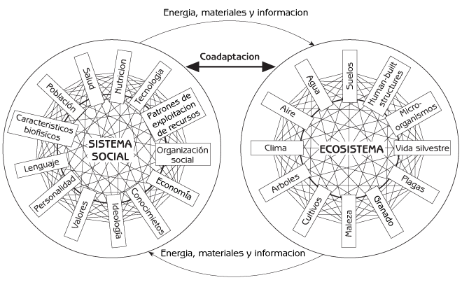
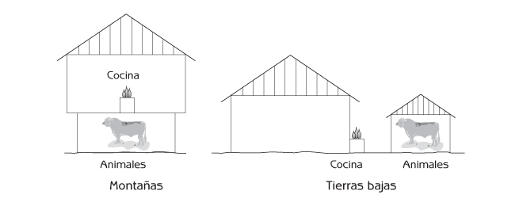
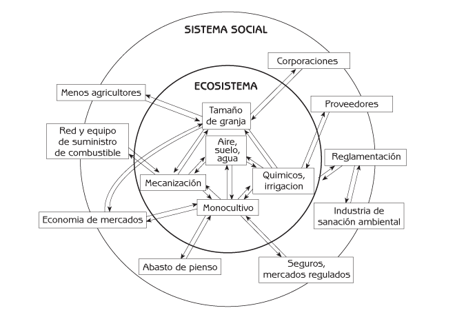
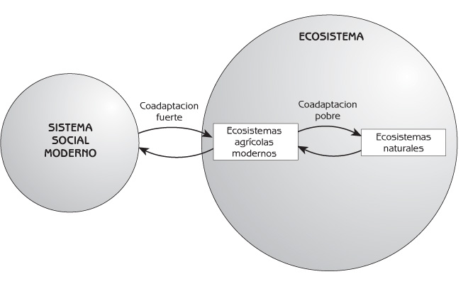

Ecología Humana
Conceptos Básicos para el Desarrollo Sustentable
Autor: Gerald G. Marten
Editorial: Earthscan Publications
Fecha de publicación: November 2001, 256 pp.
Edición en rústica: 1853837148
Edición en pasta dura: 185383713X
← Consulte el índice completo del libro.
Capítulo 7 Coevolución y Coadaptación de los Sistemas Sociales Humanos y los Ecosistemas
- Coadaptación en Sistemas Sociales Tradicionales
- Coevolución del Sistema Social y el Ecosistema desde la Agricultura Tradicional a la Moderna
- Puntos de Reflexión
Los últimos capítulos previos presentaron algunas de las capacidades emergentes de los sistemas sociales y los ecosistemas. Este capítulo trata dos propiedades emergentes del sistema social y el ecosistema que se encuentran estrechamente relacionadas:
- La coevolución (el cambio simultáneo).
- La coadaptación (el ajuste entre uno y otro).
El Capítulo 5 introdujo a la coevolución y la coadaptación como partes integrales de la evolución biológica de las plantas, los animales y los microorganismos que conviven en el mismo ecosistema. La coevolución y la coadaptación consisten en una interacción de ajustes y cambios mutuos que nunca cesa.
Sucede lo mismo entre los seres humanos y el resto del ecosistema (ver Figura 7.1). Los sistemas sociales humanos se adaptan a su medio ambiente, al ecosistema, y los ecosistemas se adaptan a los sistemas sociales humanos. Los ecosistemas naturales, y las porciones naturales de los ecosistemas agrícolas y urbanos, responden a las intervenciones humanas haciendo ajustes que contribuyen a la supervivencia. Los ecosistemas agrícolas y urbanos también evolucionan y se adaptan al sistema social en la medida en que las personas los modifican para que se adecúen a su sociedad cambiante.

Figura 7.1 Interacción, coevolución y coadaptación del sistema social humano con el ecosistema. Fuente: Adaptado de Rambo, A. & Sjise, T. (1985) An Introduction to Human Ecology Research on Agricultural Systems in Southeast Asia, University of the Philippines, Los Banos, Philippines.
Este capítulo comienza con dos ejemplos de coadaptación entre sistemas sociales y ecosistemas. Termina con la historia de los cambios coadaptativos desencadenados por la Revolución Industrial entre el sistema social en modernización y los ecosistemas agrícolas.
Coadaptación en Sistemas Sociales Tradicionales
Las sociedades tradicionales son una rica fuente de ejemplos que ilustran la coadaptación entre sistemas sociales y ecosistemas. Siglos de ensayos y errores de evolución cultural han generado delicados ajustes entre muchos aspectos de los sistemas sociales tradicionales y su medio ambiente. El próximo apartado presenta dos historias de coadaptación entre sistemas sociales y mosquitos transmisores de enfermedades. La primera historia se refiere a la adaptación de un aspecto del sistema social humano, el diseño de la vivienda, a un aspecto del ecosistema, los mosquitos y la malaria. La segunda historia trata de la adaptación de un componente del ecosistema, los mosquitos, a un aspecto del sistema social, como es la tecnología de plaguicidas. El ejemplo que aparece en el apartado siguiente concierne al uso que los Indígenas Americanos hacían del fuego para modificar su mosaico de paisajes.
Coadaptación entre la gente y los mosquitos
Hace aproximadamente 100 años, los franceses desplazaron a muchas personas de las tierras bajas del Vietnam colonial hacia las montañas. Querían que hubiera más gente en las montañas para talar los bosques, y para trabajar en las plantaciones de caucho y las minas de estaño. Desgraciadamente, muchas personas de las tierras bajas murieron de malaria cuando se les forzó a vivir en las montañas. Esto era sorprendente, porque la malaria no había sido un problema grave en Vietnam. La malaria es transmitida por mosquitos, pero afortunadamente para los habitantes de las tierras bajas, la especie de mosquito que se desarrolla en los vastos arrozales de esa región no transmite la malaria. Aunque en las montañas si se encuentran las especies de mosquito transmisoras de la malaria, la enfermedad nunca fue un problema grave para los montañeses, que habían vivido ahí durante muchas generaciones. A causa de la malaria, los franceses nunca lograron desplazar con éxito a grandes cantidades de personas de las tierras bajas a las montañas.
¿Porqué los habitantes de las tierras bajas contraían malaria, mientras que los montañeses no lo hacían? La razón consistía en una diferencia cultural. Los montañeses construyen viviendas elevadas sobre el suelo, para mantener a sus animales, como los búfalos de agua, bajo la casa, y tienen la cocina dentro de la casa (ver Figura 7.2). Los mosquitos vuelan cerca del suelo, prefieren picar a los animales antes que a las personas, y el humo los repele, de manera que rara vez entran en las casas alzadas y llenas de humo de los montañeses, y pican a los animales que se encuentran bajo las viviendas, en lugar de picar a las personas.
Los habitantes de las tierras bajas construyen sus casas directamente sobre el suelo, mantienen a sus animales lejos de la vivienda, y cocinan al aire libre (ver Figura 7.2). Cuando los habitantes de las tierras bajas se mudaron a las montañas, continuaron construyendo sus viviendas y cocinando de la manera tradicional. Los mosquitos entraban fácilmente en las casas a nivel del suelo y sin humo, y picaban a las personas dentro de las casas porque no había animales que los atrajeran más. El diseño de vivienda de las tierras bajas funcionaba muy bien en esa región pero no estaba adaptado al ecosistema montañoso.

Figura 7.2 Vivienda tradicional de las montañas y tierras bajas en Vietnam.
Los montañeses estaban protegidos contra la malaria sin siquiera darse cuenta de que los mosquitos transmiten esa enfermedad. En ese entonces, antes de que los científicos descubrieran el papel de los mosquitos en la transmisión de la malaria, la gente de todo el mundo creía que la malaria era ocasionada por espíritus o por agua contaminada. Si se le preguntaba a los montañeses por qué construían sus viviendas de una manera determinada, respondían que por tradición. El diseño de sus viviendas era producto de cientos de años de evolución cultural que adaptó sus edificaciones a todas sus necesidades, incluso a la salud.
En 1940 los científicos inventaron el DDT, un insecticida eficaz contra los mosquitos transmisores de malaria. En virtud de que los mosquitos de la malaria descansan sobre los muros de las casas, y dado que el DDT permanece durante meses después de haber sido aplicado sobre estas superficies, era posible matar a casi todos los mosquitos rociando DDT sobre los muros de las viviendas solamente unas cuantas veces al año. La Organización Mundial de la Salud montó una campaña global de DDT contra la malaria en los 1950s, y al principio ésta funcionó perfectamente. La malaria prácticamente desapareció hacia fines de los 1960s. Sin embargo, los mosquitos volvieron durante la década siguiente, y también volvió la malaria. Actualmente contraen malaria unos 500 millones de personas cada año en todo el mundo, y varios millones de ellas mueren.
Los mosquitos volvieron porque desarrollaron resistencia al DDT. Unos cuantos mosquitos contaban con una mutación genética que les protegía contra el DDT. Después de que el DDT empezó a utilizarse intensamente, este gen resistente al DDT se extendió rápidamente por las poblaciones de mosquitos, porque los que contaban con él sobrevivían, mientras que los demás morían. En algunas regiones también se dio una mutación conductual. Los mosquitos empezaron a descansar en la vegetación fuera de las viviendas, en lugar de hacerlo sobre los muros impregnados de DDT. El DDT no resultó una tecnología sustentable para el control de la malaria. ¿Pero que ha sucedido con otros insecticidas? El DDT es muy barato; sin embargo, todos los demás insecticidas son demasiado caros como para ser utilizados a gran escala contra los mosquitos de la malaria. La mayoría de las naciones desistió en sus intentos por controlar la enfermedad, y desde entonces ha habido pocos avances en el control de la malaria. La utilización de medicamentos contra la malaria ha reducido las defunciones en algunas áreas, pero muchas de estas drogas ya no funcionan porque el parásito que ocasiona la enfermedad se ha hecho resistente a ellas.
En el Capítulo 12 aparece una descripción detallada de la coadaptación de los seres humanos y los mosquitos.
Quemas controladas por los indígenas americanos
El ejemplo de la protección de los bosques contra el fuego que se presentó en el Capítulo 6 explicó cómo fue que el Servicio Forestal de los Estados Unidos aprendió el valor de la utilización del fuego controlado para el manejo forestal. Esto es algo que los Indígenas Americanos ya sabían mucho antes de que los europeos llegaran a América del Norte. Ya que los Indígenas Americanos coevolucionaron con los ecosistemas de América del norte durante miles de años, su sistema social y su tecnología para el uso de la tierra estaban altamente adaptados a una relación sustentable con el medio ambiente. El uso controlado del fuego era parte íntegra de su manejo forestal. Encendían fuegos porque sabían que los incendios frecuentes eran una forma de mantener saludables los ecosistemas forestales. También utilizaban las quemas controladas para crear pequeños parches de ecosistemas diferentes, como los prados de pastos. Un mosaico de paisajes que reunía diferentes etapas de sucesión ecológica proporcionaba más plantas y animales silvestres como fuentes de alimentos que un sistema conformado exclusivamente por el bosque. Cuando los europeos llegaron a América del Norte cometieron muchos errores porque su sistema social no estaba adaptado a los ecosistemas americanos. (En el Capítulo 10 se presentan algunos ejemplos de las consecuencias ambientales debidas a las diferencias culturales entre los europeos y los Indígenas Americanos en América del Norte).
Coevolución del Sistema Social y el Ecosistema desde la Agricultura Tradicional a la Moderna
Los ecosistemas se adaptan de dos maneras a los sistemas sociales humanos:
- Los ecosistemas se reorganizan en respuesta a las actividades humanas.
- Las personas cambian los ecosistemas para ajustarlos a su sistema social.
El ejemplo de los mosquitos mostró cómo se reorganizan los ecosistemas naturales. Los mosquitos desarrollaron resistencia al DDT en respuesta al hecho de que su uso les impuso una elevada tasa de mortalidad. Los componentes naturales de los ecosistemas agrícolas y urbanos también se adaptan a las actividades humanas reorganizándose. Las porciones de los ecosistemas agrícolas y urbanos que se encuentran organizadas por la gente cambian con el sistema social porque la gente las cambia. Las personas construyen los ecosistemas agrícolas y urbanos de manera que se ajusten a su sistema social, y la gente ajusta su sistema social a sus ecosistemas agrícolas y urbanos. La modernización de la agricultura después de la Revolución Industrial ilustra la coevolución del sistema social y los ecosistemas agrícolas.
Antes de la Revolución Industrial, las personas estaban muy conscientes de las limitaciones ambientales. Su cultura, sus valores, su conocimiento, su tecnología, su organización social y otras partes de su sistema social se encontraban por necesidad estrechamente adaptadas a la naturaleza. La mayoría de las personas practicaba la agricultura de subsistencia a pequeña escala; la mayor parte de la producción agrícola se destinaba al consumo doméstico. La mayoría de las familias tenía alguna variedad de animales de granja y sembraba muchos cultivos diferentes para satisfacer las necesidades familiares de alimento y vestido. Las técnicas agrícolas se encontraban adaptadas a las condiciones ambientales locales. La cantidad de tierra que cada familia podía cultivar se encontraba limitada por la gran cantidad de trabajo humano o animal que se requería para la agricultura. La mayoría de los campesinos utilizaba policultivos – una mezcla de varios cultivos distintos en un mismo terreno. Los sistemas agrícolas que aparecen en la Figura 6.11 son policultivos.
Los policultivos tenían varias ventajas:
- Protegen a los suelos contra la erosión, y pueden mantener la fertilidad del suelo sin la utilización de fertilizantes químicos. La mezcla de diferentes especies en un policultivo genera una gran cantidad de vegetación, que cubre el suelo por completo. En contraste, es frecuente que un terreno de monocultivo (una sola especie) tenga mucho suelo desnudo. La gran cantidad de vegetación de un policultivo protege el suelo contra la precipitación pluvial, reduciendo la erosión. La vegetación también proporciona cantidades sustanciales de fertilizante orgánico, cuando las porciones no utilizadas de la cosecha se reincorporan al suelo con el arado. Si algunas de las plantas que se encuentran en el terreno son leguminosas (por ejemplo, frijoles o chícharos), las bacterias de las raíces de las leguminosas convierten el nitrógeno atmosférico en formas aprovechables por las plantas.
- Proporcionan un control natural de plagas. Las plagas agrícolas son generalmente específicas para una especie determinada de cultivo. Por ejemplo, si un terreno está 100% cubierto por un monocultivo de maíz, las plagas del maíz se multiplican en gran cantidad y causan graves daños si no se utilizan plaguicidas. Pero si en un terreno hay muchos cultivos diferentes, son solamente unas cuantas plantas de maíz, las plagas del maíz tienen problemas para localizar a sus hospederos; y como resultado, no pueden multiplicarse demasiado y el daño que ocasionan es limitado. Los policultivos también proporcionan un buen hábitat para animales tales como aves e insectos depredadores que se alimentan de insectos plaga. Los depredadores constituyen un control natural de plagas. Cuando se utilizan plaguicidas químicos en la agricultura moderna, mueren muchos de los depredadores, y se pierde buena parte del control natural de las plagas.
- Permiten que los campesinos diversifiquen sus riesgos. Si durante un año el estado del tiempo es malo para algunas especies de cultivos, probablemente no lo sea para todos. Si los precios de algunos cultivos en el mercado son bajos probablemente sean mejores para otros.
La agricultura en Europa cambió cuando la Revolución Industrial hizo posible la utilización de maquinaria en lugar de trabajo humano o animal para realizar trabajos como arar o cosechar campos. La cadena de los efectos que sucedieron a partir de la mecanización se puede trazar a través de la Figura 7.3. Las máquinas dieron a los agricultores la habilidad para cultivar mayores superficies de terreno. El tamaño de las áreas agrícolas creció dramáticamente porque la agricultura mecanizada es más eficiente en una escala más grande (economía de escala). Esto cambios iniciales en el sistema social y el ecosistema desencadenaron una serie de modificaciones a lo largo de circuitos de retroalimentación positiva interconectados en el ecosistema y el sistema social.

Figura 7.3 Interrelación del sistema social con ecosistemas agrícolas tras la Revolución Industrial.
Cuando se incrementó el tamaño de los terrenos agrícolas, los agricultores pudieron producir más de lo que necesitaban para sus familias, de manera que cambiaron de la agricultura de subsistencia a una economía de mercado. Una mayor superficie agrícola también significaba que había un excedente en la producción que servía para sostener a las ciudades. Mucha gente dejó la agricultura y emigró a las ciudades, donde existían mejores oportunidades económicas.
Uno de los principales cambios en el ecosistema fue que pasó de la agricultura de policultivos al monocultivo. Con la mecanización, los agricultores dejaron de mezclar los cultivos porque la maquinaria agrícola funciona mejor con cultivos uniformes. La economía de mercado también significó un incentivo para el cambio porque era más conveniente para los agricultores producir y vender un solo cultivo. El cambio de policultivo a monocultivo condujo a muchos otros cambios. Los monocultivos no protegían el suelo contra la erosión ni mantenían su fertilidad tan bien como los policultivos. Los riesgos de fracaso de las cosechas debidos al mal tiempo o a ataques de plagas también eran mayores con los monocultivos porque ‘todos los huevos estaban en una sola canasta’. En consecuencia, era importante que la agricultura se hiciera más independiente del medio ambiente mediante el riego, los fertilizantes químicos y los plaguicidas, todo lo cual se hizo posible gracias a los nuevos desarrollos científicos y a la energía proveniente de los combustibles fósiles.
Los gobiernos fueron involucrándose gradualmente en la investigación para proporcionar mejores tecnologías para el nuevo estilo de la agricultura: variedades mejoradas de cultivos para obtener mayores rendimientos utilizando más insumos (fertilizantes químicos, plaguicidas, etc.), así como mejores técnicas para utilizar los insumos. Se organizaron redes comerciales para proporcionar maquinaria, agroquímicos y semillas de alto rendimiento a los agricultores. Los seguros agrícolas y la regulación gubernamental del mercado, incluyendo los subsidios emitidos por el gobierno, se desarrollaron a la luz de los mayores riesgos asociados con los monocultivos.
Las mejoras en la tecnología hicieron que los monocultivos resultaran cada vez más ventajosos que los policultivos. Debido a que las diferentes especies de plantas tienen requerimientos distintos para su desarrollo, las condiciones en un campo de policultivo no pueden resultar óptimas para todas las especies de plantas que crecen en él. La especialización a través del monocultivo hizo que resultara más fácil para los agricultores utilizar insumos elevados para obtener las condiciones óptimas para alcanzar los rendimientos más altos posibles de un cultivo determinado.
Los agricultores cambiaron su sistema de creencias – su cosmovisión. Una vez que se había iniciado la Revolución Industrial, la tecnología, la maquinaria y los combustibles fósiles parecían liberar a la gente de muchas limitaciones ambientales. Las personas empezaron a pensar más en la agricultura en términos económicos, como negocio, y menos en términos ambientales. Todos creían que el futuro iba a proporcionar avances en la ciencia y la tecnología que ofrecerían posibilidades infinitas para la acumulación de capital y el desarrollo económico. Eventualmente, muchas granjas fueron ocupadas por grandes corporaciones, y la agricultura se fue haciendo cada vez más ‘verticalmente integrada’. Actualmente, muchas de las compañías poseedoras de supermercados también son dueñas de los terrenos agrícolas y de las plantas procesadoras de alimentos que proveen de alimentos a sus supermercados.
Eventualmente la gente tuvo que cambiar sus creencias, a medida que las implicaciones del uso de plaguicidas y fertilizantes químicos para la salud ambiental y humana se hicieron evidentes en años recientes. Los gobiernos empezaron a regular el uso de agroquímicos, y emprendieron programas de investigación para enfrentar las consecuencias de su aplicación. Surgió una nueva industria ambiental en el sector privado, creada para enfrentar la contaminación proveniente de la agricultura y otras fuentes.
Los sistemas sociales y los ecosistemas agrícolas han cambiado a lo largo de la historia en formas que les han permitido funcionar bien unos con otros. En términos generales, esto sigue siendo cierto. Los sistemas sociales y los ecosistemas agrícolas modernos continúan cambiando juntos y están fuertemente coadaptados (ver Figura 7.4). El problema actual consiste en que los ecosistemas agrícolas modernos han perdido su coadaptación con los ecosistemas naturales que los rodean (los ecosistemas naturales de los que depende su viabilidad en el largo plazo). Los ecosistemas agrícolas modernos dependen de insumos a gran escala de fertilizantes y plaguicidas provenientes de fuentes naturales que pueden resultar insostenibles a esa escala, y que contaminan los ecosistemas circundantes con aflujos de fertilizantes y pesticidas provenientes de los terrenos agrícolas. Los ecosistemas agrícolas modernos también dependen de los ecosistemas naturales para obtener insumos masivos de energía y, en muchos casos, agua de riego, que pueden resultar imposibles de sostener.

Figura 7.4 Coadaptación de los sistemas sociales modernos y ecosistemas.
La reciente popularidad de los alimentos orgánicos estimula un retorno a los ecosistemas agrícolas que resultan más compatibles con los ecosistemas naturales. Los agricultores orgánicos están volviendo a utilizar selectivamente métodos tradicionales de labranza, y usando fertilizantes orgánicos y métodos ambientalmente inocuos de control de plagas. Sus ecosistemas agrícolas no dependen de insumos químicos, y la contaminación de los ecosistemas circundantes se minimiza. A medida que continúa creciendo el mercado de alimentos orgánicos, los científicos agrícolas y los agricultores se verán estimulados para desarrollar nuevas tecnologías agrícolas ecológicamente robustas.
Puntos de Reflexión
- Considere el ejemplo de la coevolución de los sistemas sociales y los ecosistemas naturales desde la agricultura tradicional hasta la moderna que se presentó en este capítulo. Enliste lo sucedido para cada flecha en la Figura 7.3.
- Hable con un agricultor acerca de los cambios que han acontecido durante los últimos 50 años en los ecosistemas agrícolas de la región donde vive. Pregúntele al agricultor acerca de:
- los insumos materiales que había hace 50 años y cómo han cambiado desde entonces;
- los cambios en la organización y la estructura de los ecosistemas agrícolas y cómo se han modificado durante los últimos 50 años los métodos de labranza y los insumos de energía;
- los cambios asociados en el sistema social (tales como los cambios en los estilos de la vida rural, la organización de la comunidad local, la tenencia de la tierra, las asociaciones agrícolas y la comercialización de los productos del campo, la importación de alimentos, y el papel del gobierno).
- Piense acerca de los intercambios insumo-egreso y otras interacciones de ecosistemas agrícolas y naturales que ocurren en la región donde vive. ¿Parecen estar bien coadaptados los ecosistemas agrícolas a los naturales? ¿Tienen una relación sustentable con los naturales?
- ¿En qué formas se encuentra coadaptado el sistema social de su barrio (o pueblo) al medio ambiente local? ¿En qué formas se encuentra coadaptado su sistema social nacional al medio ambiente? Enumere las maneras en que estos sistemas sociales se encuentran pobremente coadaptados a su medio ambiente.